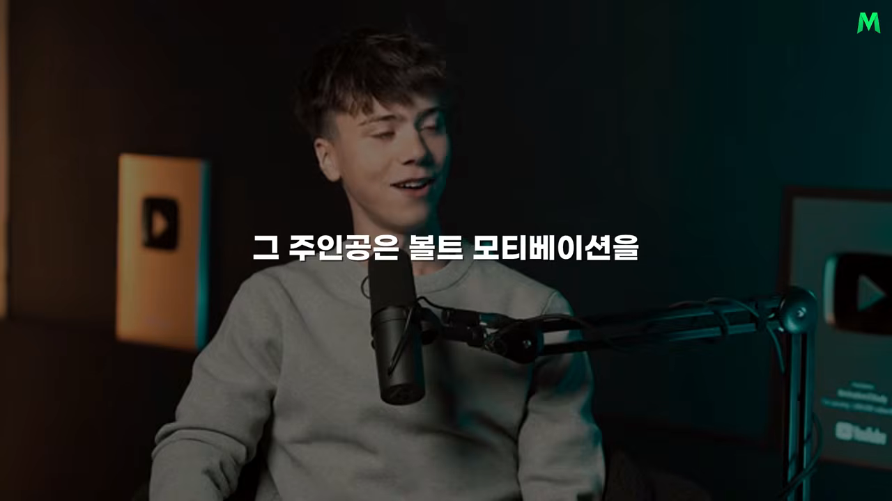
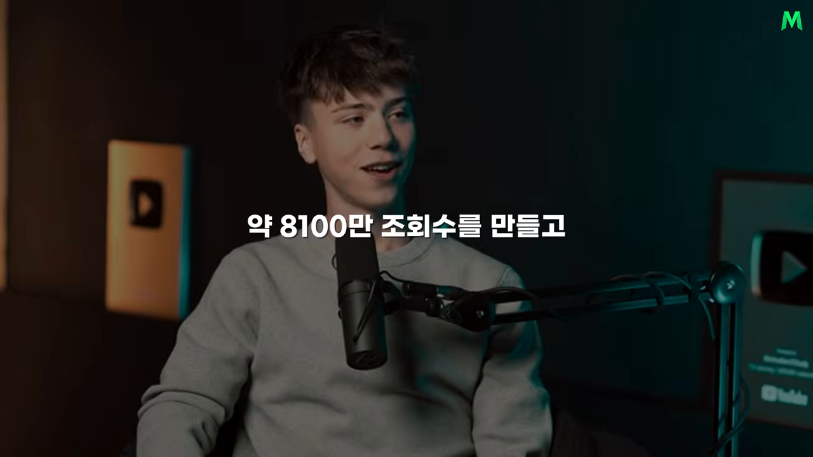

취미 편집에서 동기부여 쇼츠 채널로
주인공은 쇼츠 채널 Bolt Motivation을 혼자 운영하는 18살 매티스(Mathis)예요. 유튜브, 틱톡, 인스타그램을 합쳐 한 달에 2억 5천만 조회수를 내요. 다른 사람의 영상 클립을 모아 역경을 이겨 낸 사람들의 이야기를 1분 안팎으로 압축하는 게 그의 일이에요.

좋아하던 주제를 골랐어요
매티스는 12살 때 포트나이트 게임 장면을 이어 붙인 영상을 만들며 편집에 재미를 붙였어요. 몇 년 뒤 콘텐츠로 부수입을 버는 사람들을 보고 16살에 다시 시작했어요. 분야는 동기부여로 정했어요. 원래 데이비드 고긴스(David Goggins)의 콘텐츠를 즐겨 보고 달리기와 자기 관리에 빠져 있었거든요.
유행하는 분야를 계산해서 들어간 게 아니라는 점이 중요해요. 사람들이 어떤 장면에서 감동하고 다시 일어서고 싶어지는지 아는 감각은 오래 관심을 둔 데서 나와요.
왜 긴 영상이 아니라 쇼츠였을까요
이유는 완벽주의예요. 10분짜리 영상을 만들면 끝에 닿기도 전에 처음부터 다시 하고 싶어진다고 해요. 1분 안팎의 쇼츠는 만들고, 올리고, 반응을 보고, 다음 영상에 고치는 순환을 빠르게 돌릴 수 있어요. 자기에게 맞는 형식을 고른 게 꾸준함의 출발점이었어요.
200회에서 시작해 일을 그만두기까지
첫 영상 조회수는 약 200회였어요. 매티스는 200명이 자기 영상을 봤다는 데 신이 나서 계속 새로 고침을 했다고 해요. 약 2주 뒤 2만 회짜리 영상이 나왔고, 코비 브라이언트를 다룬 영상은 틱톡에서 100만 회를 넘겼어요.
운만은 아니었어요. 그는 패스트푸드점에서 일하면서 남는 시간을 거의 다 영상에 썼어요. 여름방학 두 달을 통째로 쏟았고, 학교로 돌아갈 무렵 틱톡 팔로워가 10만 명을 넘었어요.
전환점은 조회수에 따라 돈을 주는 광고 캠페인이었어요. 수백 명이 참여했는데, 작은 크리에이터였던 그가 가장 좋은 성과를 냈어요. 몇 달 치 아르바이트 월급을 영상으로 벌 수 있다는 걸 확인하고 일을 그만뒀어요.
| 항목 | 원래 인터뷰 | 이 영상(내레이션) |
|---|---|---|
| 캠페인 조회수 | 약 800만 회 | 음성은 약 800만, 화면 자막은 '8100만' |
| 번 돈 | 3,000달러 (통화는 따로 안 밝혔어요) | 캐나다 달러 3,000달러 |
| 지급 방식 | 1,000회당 약 20센트 | 조회수 천 회당 일정 금액 |

끝까지 보게 만드는 3단계 이야기 구조
그의 영상은 왜 유독 많이 재생될까요. 매티스는 짧은 이야기를 세 단계로 짜요. 원래 인터뷰에서는 각각 hook, tension, payoff라고 불러요.
| 단계 | 비중 | 하는 일 | 예시 장면 |
|---|---|---|---|
| 훅 | 처음 3~5초 | 맥락을 몰라도 눈을 뗄 수 없는 순간을 맨 앞에 둬요 | 장애물을 넘으려는 순간, 결정적인 실패 |
| 긴장 | 약 90% | 결과를 예측할 수 없게 만들어 다음 장면을 기다리게 해요 | 실패할 가능성, 예상 못 한 장애물, 남은 선택 |
| 보상 | 마지막 | 앞에서 쌓은 궁금증과 긴장을 풀어 줘요 | 결승선 통과, 가족과의 포옹, 뜻밖의 깨달음 |
배경보다 장면이 먼저예요
매티스는 가진 영상에서 가장 강한 3~5초를 먼저 골라요. 사건의 배경부터 차분히 설명하지 않아요. 강한 장면을 보여 준 다음 시간을 되돌려 이 사람이 누구인지, 왜 이 도전이 중요한지 설명해요. 시청자는 이미 결과가 궁금하니까 배경 설명까지 따라와요.
많은 사람이 이 순서를 거꾸로 해요. 이해를 돕겠다고 배경부터 길게 풀고 나서 핵심 장면을 보여 줘요. 하지만 쇼츠에서는 화면을 한 번 밀면 다음 영상이 바로 나와요. 친절한 설명보다 먼저 필요한 건 이 이야기를 계속 볼 이유예요.
긴장은 불확실성에서 나와요
주인공이 결국 성공하리라는 게 너무 빨리 확정되면 시청자는 떠나요. 실패할 수도 있다는 가능성이 남아 있어야 해요. 매티스는 시청 지속 시간 그래프에서 사람들이 빠져나간 지점을 확인했어요. 그리고 거기서 긴장이 풀린 이유를 찾아 다음 영상에 반영했어요.
보상이 약하면 아예 만들지 않아요
시작에서 만든 궁금증과 중간에서 쌓은 긴장을 마지막 장면이 풀어 줘야 이야기가 완성돼요. 강한 시작만 있고 결말이 약하면 조회수는 나와도 시청자에게 좋은 감정이 남지 않아요. 원래 인터뷰에서 그는 좋은 보상이 없는 소재는 만들 이유가 없다고까지 말해요.
모든 영상에 같은 틀을 쓰진 않아요
매티스는 자기 콘텐츠를 인생의 지혜, 따뜻한 선행, 스포츠, 통쾌한 반전 같은 묶음으로 나눠 봐요. 이야기형 영상에는 위의 세 단계가 맞아요. 하지만 시청자에게 직접 행동을 촉구하는 영상이라면 다른 틀이 어울려요.
| 영상 종류 | 시작 | 가운데 | 끝 |
|---|---|---|---|
| 역경을 이겨 낸 이야기 | 훅: 가장 강한 장면 | 긴장: 결과를 모르게 | 보상: 극복의 순간 |
| 행동을 촉구하는 영상 | 문제를 지적해요 | 그 문제의 고통을 선명하게 보여 줘요 | 구체적인 행동을 제안해요 (예: 지금 팔굽혀펴기 20개) |
형식보다 중요한 건 시청자의 감정이 어떤 순서로 움직일지 설계하는 일이에요.
소재 고르기부터 편집, AI 활용까지
경쟁 채널은 일부러 안 봐요
비슷한 채널을 많이 보면 자기도 모르게 아이디어와 표현이 닮아 간다고 생각해서예요. 대신 인터넷 문화, 스포츠, 스트리밍, 영화와 드라마처럼 넓은 곳에서 소재를 찾아요. 어떤 장면을 발견하면 이미 유행했는지보다 '내가 편집하면 10배 더 좋아질 수 있는지'를 따져요.
I don't want to stay stuck in my ways or follow the trend, you know, I want to be the trend.
제 방식에 갇히거나 유행을 따라가고 싶지 않아요. 제가 유행이 되고 싶어요.
— 원래 인터뷰 (이 영상 05:26 부근)
그렇다고 세상과 담을 쌓는 건 아니에요. 지금 어떤 사건과 작품이 화제인지는 계속 챙겨요. 다만 같은 분야의 결과물을 베끼지 않고, 대중의 관심이 모인 원재료를 자기 방식으로 다시 풀어요. 유행을 따르는 것과 유행을 해석하는 건 전혀 다른 일이에요.
편집은 세 단계로 흘러가요
- 화질이 가장 좋은 원본을 찾아 AI 업스케일링 도구로 더 선명하게 만들어요.
- 프리미어 프로에서 이야기의 뼈대를 잡아요. 이 단계에선 효과보다 순서와 맥락이 먼저예요. 기본 편집만으로도 끝까지 볼 만한 이야기여야 해요.
- 애프터 이펙트에서 빛나는 자막, 눈에 띄는 색감, 전환 효과, 워터마크를 더해요. 매티스는 이 과정을 채널 이름을 따서 '볼트화'라고 불러요.
화면을 넘기는 사람 눈에 밝고 선명한 영상이 먼저 들어오게 하려는 거예요. 그래도 그는 효과가 약한 이야기를 살려 준다고 착각하지 않아요. 좋은 이야기가 먼저고, 시각적 완성도는 그 힘을 키우는 장치예요.
AI는 옆자리 동료예요
AI는 제작 전 과정에 들어가 있어요. 아이디어와 제목을 다듬을 때도, 긴 원본에서 쓸 만한 순간을 찾을 때도 써요. 특히 자막만 읽는 도구가 아니라 화면과 화자를 함께 이해하는 도구로 누가 어떤 상황에서 무슨 말을 했는지 파악해요. 원래 인터뷰에서 그가 밝힌 도구는 Google AI Studio예요. 덕분에 긴 영상을 처음부터 끝까지 손으로 뒤지는 시간이 줄어요.
AI가 초안을 만들었다고 바로 올리지는 않아요. 자기가 편집한 첫 버전을 다시 AI에게 보여 주고 물어요. 이해하기 어려운 부분은 없는지, 흐름이 끊기는 곳은 어디인지, 더 강한 장면은 없는지요. AI를 창작자 대신 일하는 기계가 아니라 냉정하게 피드백을 주는 동료처럼 써요.
매티스는 중학생 때 ChatGPT가 대중화되기 전부터 AI 서비스의 조기 접근을 신청했어요. 이미지 생성 도구가 나왔을 때도 똑같이 먼저 배웠어요. 주변 사람들이 관심을 가질 무렵 그는 이미 질문을 잘 만드는 법과 결과를 검증하는 법을 익힌 뒤였어요.
조회수와 수익은 어디서 나오나요
AI를 쓴다고 일이 쉬워진 건 아니에요. 영상 한 편에 약 10시간이 들어가요. 하루 대부분을 컴퓨터 앞에서 편집하고, 찾아보고, 새 방식을 시험하며 보내요. 1분짜리 결과물 뒤에 수천 시간 쌓은 감각이 있는 셈이에요.
| 항목 | 수치 |
|---|---|
| 월 조회수 (세 플랫폼 합계) | 약 2억 5천만 회 |
| 최근 영상 | 업로드 약 12시간 만에 유튜브 700만 회 |
| 가장 많이 본 영상 | 유튜브 1억 2천만 회 |
| 쇼츠 피드를 넘기다 들어온 시청자 | 약 95% |
| 홈 화면에서 썸네일을 눌러 들어온 시청자 | 약 4% |
| 유튜브 1,000회당 수익 | 시작할 때 약 8센트 → 지금 약 30센트 (캐나다 달러) |
마지막 두 줄의 출처는 원래 인터뷰예요. 내레이션은 '약 8 수준에서 약 30 수준'이라고만 말해요.
첫 장면은 생존 조건이에요
시청자 대부분이 썸네일이 아니라 피드에서 영상을 만나요. 그래서 첫 장면은 고를 수 있는 옵션이 아니라 살아남기 위한 조건이에요. 그렇다고 포장을 무시하진 않아요. 제목에 신경 쓰기 시작한 뒤 조회수가 더 늘었다고 해요.
유튜브가 돈을 가장 많이 줘요
유튜브의 1,000회당 수익은 몇 센트 차이로 작아 보여도, 수천만, 수억 조회수가 쌓이면 큰돈이 돼요. 틱톡과 인스타그램에서는 수익이 거의 없지만 같은 영상을 다 올려 더 많은 사람에게 닿게 해요.
옛 영상이 계속 일해요
유튜브에서는 새 영상을 안 올려도 예전 영상이 꾸준히 재생돼요. 원래 인터뷰에서 매티스는 지금 게시를 멈춰도 앞으로 1년쯤은 하루 약 300달러가 들어올 거라고 했어요. 월 2억 5천만 조회수 가운데 새 영상 몫은 약 1억 5천만이고, 나머지는 옛 영상에서 나와요. 한 편씩 쌓인 영상이 새 시청자를 데려오는 자산이 된 거예요.
광고 말고도 수익이 있어요
영상 아래 워터마크 자리에 '이렇게 편집하고 싶다면 프로필 링크'라는 문구를 띄워 편집 자료(PDF)를 팔았어요. 같은 방식을 Cal AI라는 AI 앱 광고에도 썼고, 원래 인터뷰 기준으로 이 협찬이 가장 많이 번 달을 만들었어요.
소니와는 영화 「가라데 키드: 레전드」 홍보 영상을 함께 만들었어요. 그가 활동 초기에 예전 「가라데 키드」 영화로 만든 영상이 2천만 회 넘게 재생된 걸 보고 회사가 먼저 연락했어요. 남의 영상을 편집하던 16살이 몇 년 만에 대형 영화사의 공식 의뢰를 받은 거예요. 실력이 공개적으로 쌓이면 이런 기회가 생겨요.
번아웃, 꾸준함, 그리고 다음 목표
번아웃은 방향을 바꾸라는 신호예요
영상 하나에 10시간을 쓰면서 하루이틀마다 올리면 사실상 쉬는 날이 없어요. 매티스도 번아웃을 여러 번 겪었어요. 그는 이걸 실패의 증거로만 보지 않았어요. 콘텐츠 방식이나 사업 모델을 바꾸라는 신호로 받아들였고, 스스로 재미있다고 느끼는 소재를 만들며 회복했어요.
그가 보기에 많은 사람이 지치는 이유는 팔로워가 기대할 것 같은 한 가지 형식에 자신을 가두기 때문이에요. 그래서 수백만 명이 구독해도 자기가 멋지다고 생각하고 사람들에게 좋은 영향을 줄 수 있는 이야기를 골라요. 쇼츠 구독자는 긴 영상의 충성 시청자와 성격이 다르다는 점도 짚어요. 쇼츠에서는 사람들이 쉽게 구독하는 만큼 깊이 따라오지 않거든요.
초보가 가장 많이 하는 실수
분야를 너무 빨리 바꾸는 거예요. 한 달 해 보고 성과가 없으면 동기부여에서 음악으로, 또 다른 유행으로 옮겨 가요. 잘되는 채널의 겉모습만 따라 하고, 그 방식이 왜 통하는지는 공부하지 않아요.
매티스는 처음부터 동기부여 분야를 떠날 생각을 거의 하지 않았어요. 반응이 약한 영상이 나오면 분야를 버리는 대신 자기 판단과 편집에서 이유를 찾았어요. 한곳에 오래 머물수록 실패는 감각을 훈련하는 데이터가 돼요.
다음 목표: 더 넓게가 아니라 더 깊게
그는 새 사업을 여러 개 벌일 생각이 없어요. 먼저 혼자 하던 제작 과정을 정리하고 팀을 꾸려, 월 2억 5천만 조회수를 5억, 다시 10억으로 키우려 해요. 강의도 당장은 팔지 않아요.
I don't want to be one of these people that is selling a product on how to do the thing but hasn't actually done the thing themselves.
직접 해내지도 않고 해내는 법부터 파는 사람이 되고 싶지 않아요.
— 원래 인터뷰 (이 영상 11:23 부근)
앞으로는 개인 브랜드를 만들고 카메라 앞에 서는 법도 배우려 해요. 엄청난 조회수를 낸 그도 카메라 앞에서 말하는 건 별개의 기술이라고 인정해요. 처음 영상을 만들 때 아무도 안 봐서 서툴러도 괜찮았던 것처럼, 새 분야에서도 서툰 자신을 허용하며 배울 계획이에요.
무엇을 하지 않았는지가 더 중요해요
그는 피아노, 체스, 운동, 골프로 화면 밖 시간도 만들어요. 그래도 꾸준함의 핵심은 무엇을 했느냐보다 무엇을 하지 않았느냐에 있다고 봐요. 파티와 술 대신 늦은 밤까지 혼자 작업하는 시간을 골랐어요. 모두가 같은 삶을 살 필요는 없지만, 큰 목표를 고른다는 건 그 목표와 경쟁하는 다른 선택을 줄이는 일이에요.
내레이터의 정리
마지막에 내레이터는 매티스가 조회수를 비밀 공식으로 설명하지 않았다는 점을 가장 중요하게 꼽아요. 훅, 긴장, 보상이라는 구조는 분명 쓸모 있어요. 하지만 그걸 성과로 바꾼 건 영상마다 10시간씩 실험하고, 반응이 약할 때 분야를 바꾸지 않고 원인을 찾은 시간이었어요. AI도 그 노력을 없애지 않았고, 더 좋은 장면을 찾고 더 냉정하게 검토하도록 도왔을 뿐이에요.
오래 관심을 둘 주제를 정하고, 작은 반응도 신호로 받아들이고, 결과 하나하나에서 다음 개선점을 찾는 것. 그렇게 쌓인 감각은 남이 짧은 시간에 베낄 수 없어요.